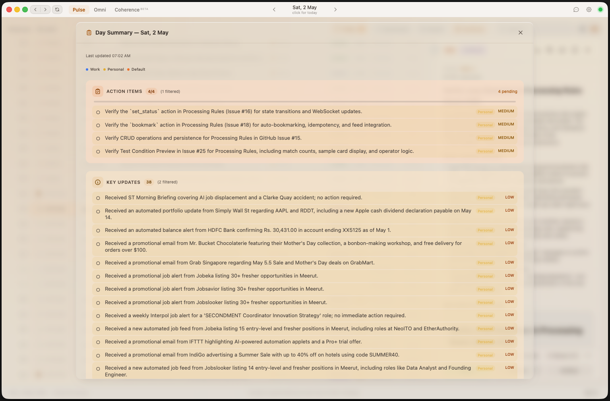
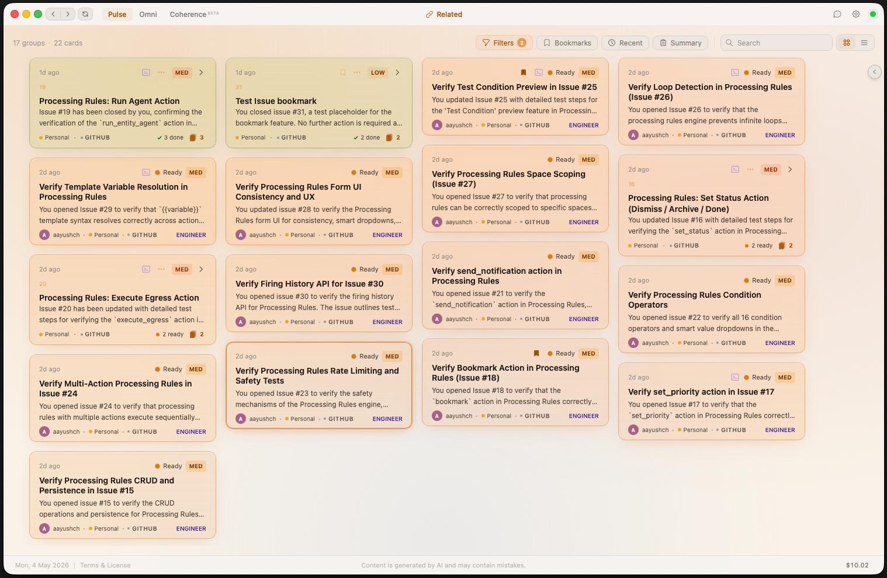
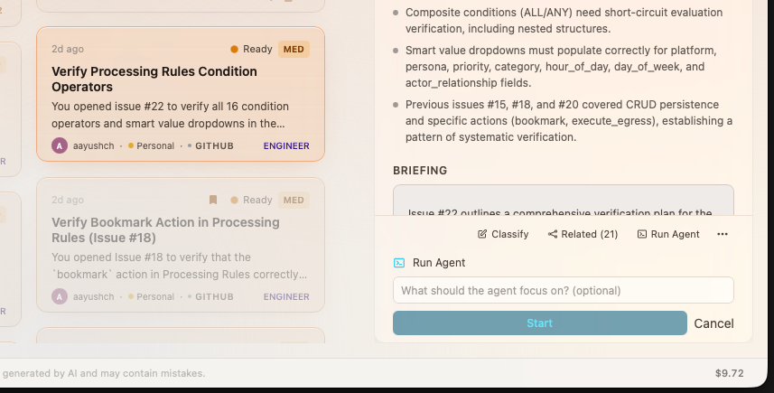
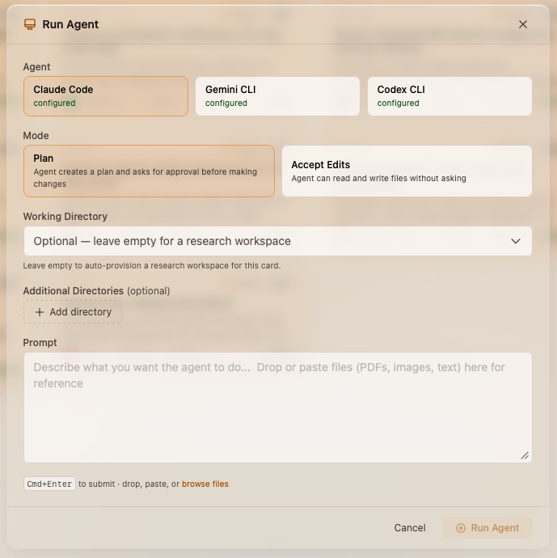
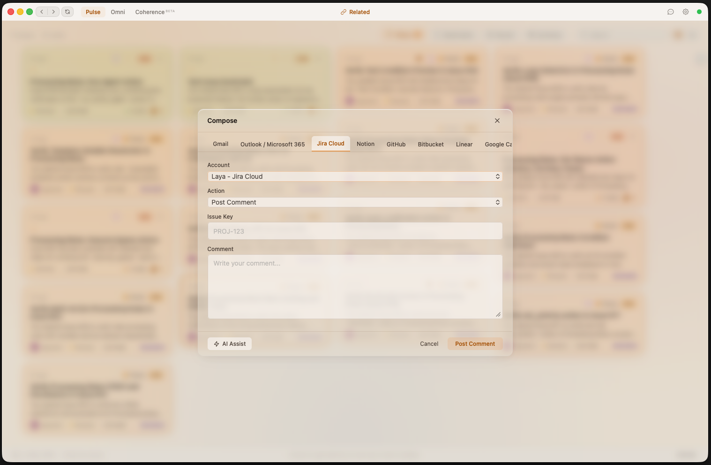

Laya enriches your daily workflows with AI — whether you connect one platform or many. It researches context, drafts responses, and delivers ready-to-approve action cards before you even open the app.
Open source. Local-first. Works with one platform or many. Your API keys, your data.



Whether you juggle eight tools or just an overflowing inbox — every notification demands attention and none of them come with context.
Every card Laya delivers has already been researched, classified, and prepared for action.
Every notification gets an AI-generated intelligence report. Sender reputation, cross-platform context, pattern recognition from your history, and actionable insights — all before you read a single word.
Draft replies, code fixes, briefing summaries — ready for one-click approval. The AI does the work. You just say "go" or refine the details.
Wake up to an AI-synthesized morning briefing. Events & meetings, action items, key updates — organized by priority across all your spaces.
Run coding agents (Claude Code, Gemini CLI, Codex) directly from any card. Watch them work in real-time and guide their actions from the workspace.
Every event is automatically categorized by persona (Engineer, Comms, Ops, Finance, HR, Sales), priority (Critical to Low), and category — using a multi-model AI pipeline that learns from your corrections.
Organize your life into separate contexts — Work, Personal, side projects. Each space has its own sources, model configs, and API keys.
Search for any entity across all platforms and trace its full lifecycle — from Jira ticket to PR to Slack thread. AI-generated narratives tell the complete story.
Execute outbound actions from a single interface — send emails, post Slack messages, comment on tickets, and more. AI-assisted drafting with full preview before sending.
Bookmark important cards for quick access. Filter your feed to show only bookmarked items — no matter the date or status.
A rolling cross-platform summary that answers "where am I right now?" at a glance. Four temporal layers — from items needing attention to long-term milestones — compressed by AI.
Automatically links related cards across platforms using semantic similarity and LLM confirmation. Learns from your link/unlink corrections to improve grouping accuracy over time.
Launch a fully configured agent session from any card. Choose your runtime, set an execution mode, configure directories, and write detailed prompts — with Plan or Accept Edits modes for full control.
Monitor LLM costs broken down by feature (Pulse, Omni, Chat, Coherence) and pipeline step. Set monthly spending caps with automatic pause when limits are reached.
A multi-stage AI pipeline transforms raw notifications into ready-to-approve intelligence.
Events flow in from Gmail, Slack, Jira, GitHub, Calendar — connect as many or as few as you need.
Fast AI classifies priority, category, persona, and builds a research plan.
Specialized workers research context, draft replies, spawn coding agents, gather intelligence.
Polished action cards land in your feed with intelligence reports and one-click actions.
Laya doesn't just forward notifications. It investigates them. Each card includes an AI intelligence report with cross-platform context and pattern-matched history.
Switch between list view for rapid triage or card view for visual scanning. Sort by newest, priority, category, or platform. Context-grouped cards cluster related items automatically.

Every morning, Laya synthesizes overnight activity across all your platforms into a structured briefing. Events, action items, and key updates — prioritized and ready.

The Day Summary distills your entire day into a single structured view. Action items with pending counts, key updates filtered from noise, and space-level breakdowns — all generated and updated automatically.
Run coding agents — Claude Code, Gemini CLI, or Codex — directly from any card in your feed. Each session gets a dedicated workspace with a live timeline, context panel, and generated files.

Laya's built-in chat uses semantic search across all your ingested events. Ask natural language questions and get instant, context-rich answers — with links back to the original cards and events.

Omni is a rolling cross-platform summary that synthesizes all your professional activity into a single unified view. It answers "where am I right now?" — especially powerful after time away or for sprint retrospectives.

Coherence is Laya's cross-platform entity search. Search for a person, ticket, PR, or project and see its complete lifecycle — every event, every platform, one chronological story.

Laya's context association engine uses semantic similarity and LLM confirmation to automatically group cards that belong to the same real-world context — even across different platforms and entity types. Link or unlink groups manually, and Laya learns from every correction.

Every card in your feed has a Run Agent action. Provide an optional focus prompt and start the agent instantly — no context switching, no setup. The card's intelligence report and related entities are automatically injected as context.

For complex tasks, the Agent Studio gives you full control. Choose your agent runtime, select an execution mode, configure working directories, attach reference files, and write detailed prompts — all before the agent starts.

The Composer lets you execute actions across all connected platforms from a single modal. Send emails, post Slack messages, comment on Jira tickets, create GitHub issues, and more — with AI-assisted drafting and full preview before sending.

Laya's pipeline runs through distinct LLM stages — router, stager, the six persona workers, briefings, summaries, semantic chat, and more. Drop a markdown file into ~/.laya/prompts/ for any stage and Laya uses your prompt instead of the default. No fork, no rebuild.
├─ router.md # classification ├─ stager.md # action drafting ├─ engineer.md # persona voice ├─ comms.md ├─ briefing.md # daily digest ├─ omni.md # rolling summary └─ … 16 more
Whenever Laya is running, a Model Context Protocol server is reachable at http://127.0.0.1:8420/mcp/. Grab a token from Settings → MCP and wire any MCP-compatible client — Claude Desktop, Cursor, VS Code, custom agents — straight into your live data.
{ "mcpServers": { "laya": { "command": "npx", "args": [ "mcp-remote", "http://127.0.0.1:8420/mcp/", "--allow-http", "--header", "Authorization: Bearer lyat_…" ] } } }
Laya automatically routes each notification to the right specialist persona, so you get expert-level output every time.
Spawns coding agents, analyzes PRs, reviews build failures, drafts code fixes, and surfaces implementation plans with full repo context.
Drafts email replies, Slack responses, and PR comments. Analyzes sender intent, checks communication history, and prepares context-aware responses.
Aggregates calendar events, manages scheduling conflicts, synthesizes meeting prep, and monitors operational updates across all platforms.
Processes invoices, expense reports, and budget updates. Flags financial anomalies and prepares cost summaries across your accounts.
Handles people-related events — onboarding, leave requests, team announcements, and HR policy updates. Recognizes internal people operations.
Tracks prospects, deals, and pipeline activity. Summarizes customer interactions and flags deal-stage changes that need attention.
Connect one tool or all of them. Laya normalizes everything into a unified, AI-enriched event stream.
Laya is local-first by design. Your data never leaves your machine unless you choose a cloud model.
SQLite database, ChromaDB vectors, and all configs stored on your machine. No cloud account required.
Bring your own API keys. Use Claude, GPT, Gemini, or run Ollama locally for complete air-gapped privacy.
Sensitive content (DMs, emails) can be routed to local models only. Metadata stays separate from content.
Laya is free and open source. Connect your first tool, run the engine, and let AI handle the rest.